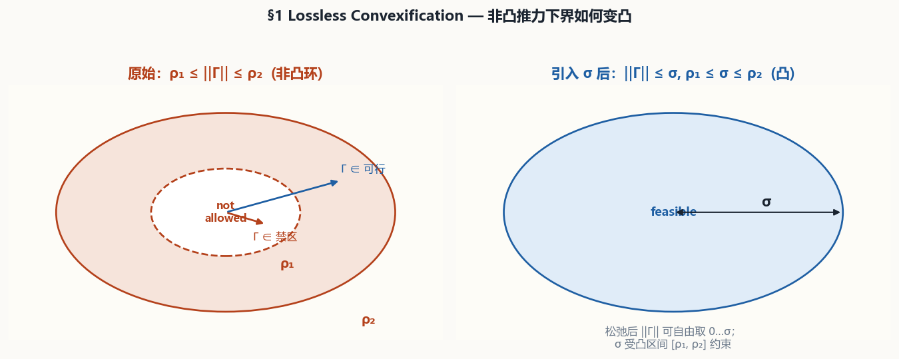
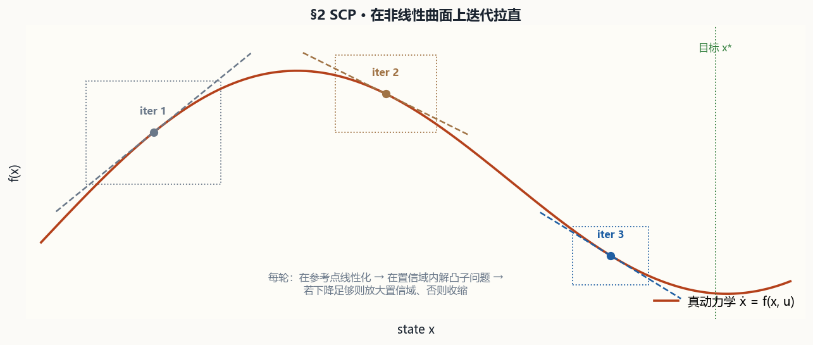
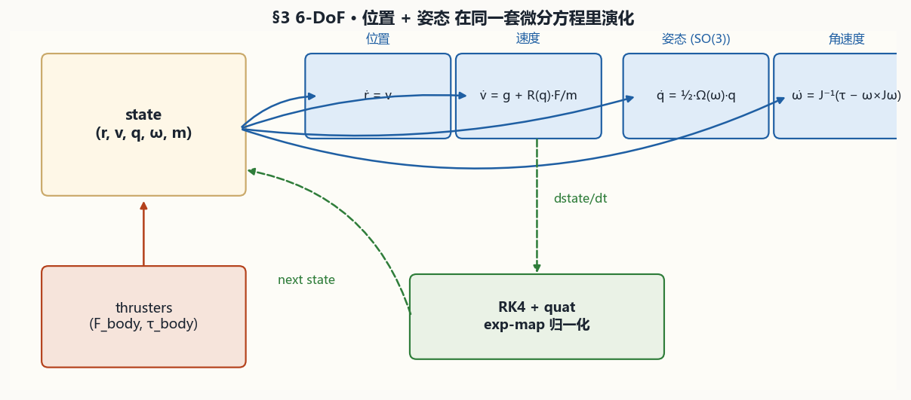
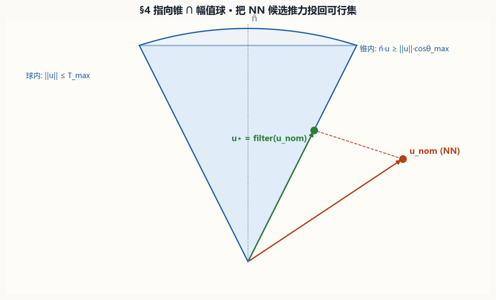
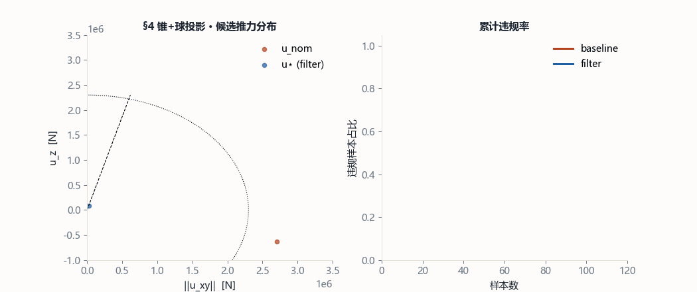
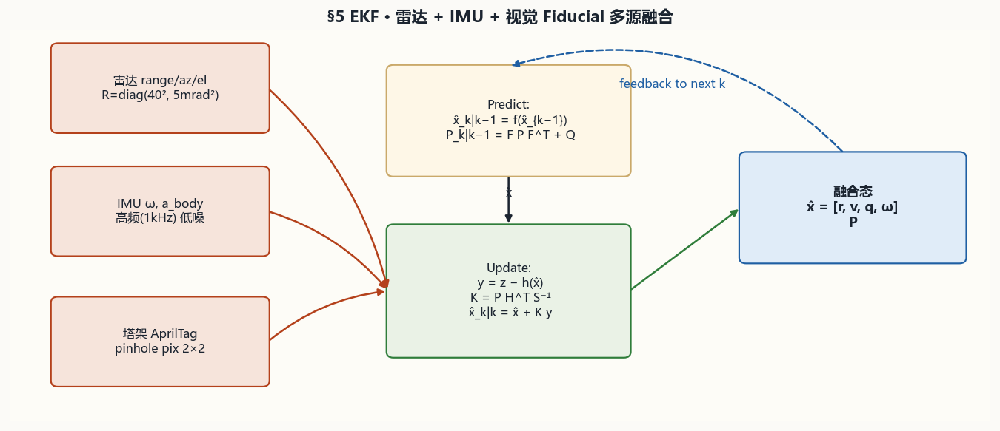
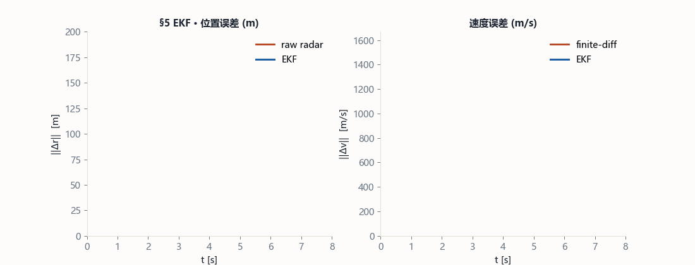
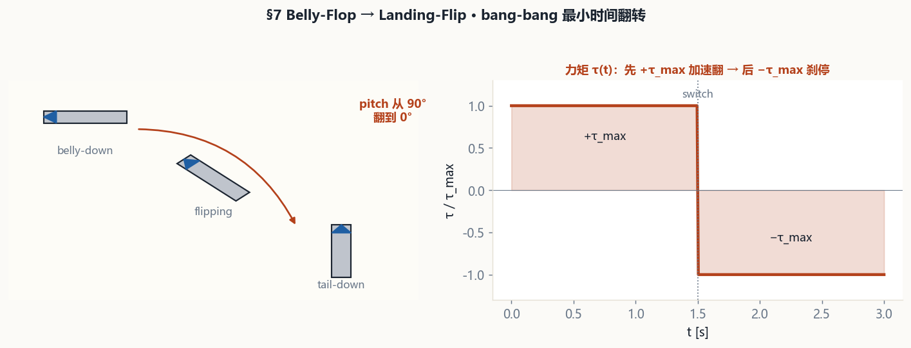
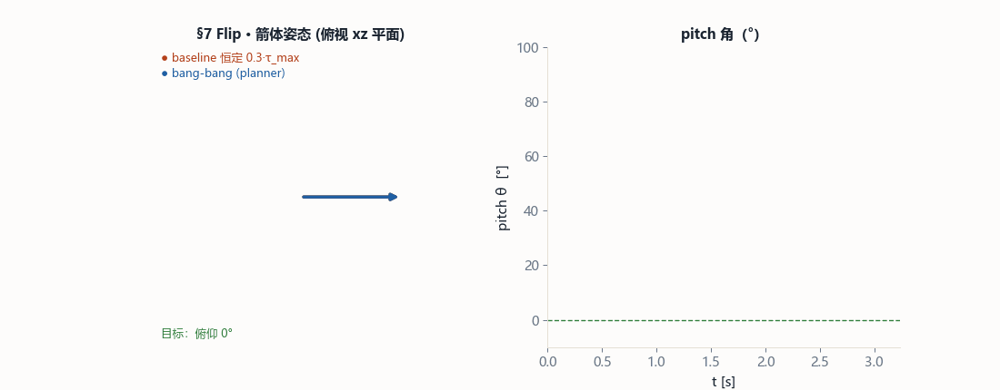
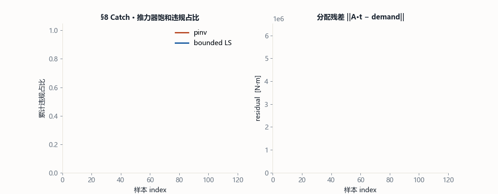

00导读 · V2 想解决什么
V1 讲"为什么这 8 个数学支柱能跑"，V2 讲"**多个 agent 接力维护它时需要看到什么**"。
V1 vs V2 的差别
| 维度 | V1 (2026-05-10) | V2 (2026-05-12) |
|---|---|---|
| 读者 | 人类 reviewer | 人类 + 各种 agent（Codex/Claude/others） |
| 重点 | 机制 + 证据 | 机制 + 证据 + 可观测性 + 契约 |
| 新材料 | — | Runtime event schema、失效模式、依赖护栏、3 不变量 |
| 接口 | `SREControlStack.step()` 返回基本 trace | 返回 `runtime.states/events/degraded` + adapter 本地事件 |
| 测试规模 | 21 | 33 |
| docs 广度 | 3 份 | 14 份（新增 claude-review/ 6 件套 + API_CONTRACTS + RUNTIME_STATES + EVENT_SCHEMA + V2_Knowledge 自己） |
协同协议
docs/claude-review/README.md— reviewer 移交包导航claude-review/HANDOFF_CHECKLIST.md— 15 分钟环境核查- 本 HTML 的 §三大不变量 和 §接手清单
Acknowledged: docs/claude-review/README.md，表示认真接过手。
本文档的信息密度
V2 不重复 V1 里已经讲透的推导（§1 的 ln m 变换、§3 的四元数 ½ 因子等，参见 EQUATION_DEEP_DIVE.md）；每个支柱只给：一张机制图 + 一张 GIF + 一组数字 + 一段 SRE 映射 + 一个 event kind。
§1 · image-11 / image-12Lossless Convexification
非凸推力下界 ρ₁ ≤ ‖Γ‖ ≤ ρ₂ 引入松弛 σ 变成凸问题，最优解里 σ 自动打到 ‖Γ‖——"无损"。


SRE 原语：PoolCapacityPlanner
对应场景：连接池"要么 0 要么 ≥ min_keep_alive"的非凸约束。同样引入 σ 表示"名义容量"，pool_size ≤ σ，σ ∈ [min_keep_alive, max_capacity]。
pool_capacity_clipped
— 预测需求超过 max_capacity * rps_per_conn 时触发，同时暴露 capacity_shortfall_rps。
counter-example：撞上限未必是 planner 错，可能是 quota 或上游削峰。
§2 · image-13 / image-14Successive Convex Programming
在参考点线性化 → 解凸子问题 → 用"改进比 ρ"动态调置信域，迭代收敛到非线性问题的解。


SRE 原语：CanaryScheduler
灰度发布：每轮扩大 share，观测 error_rate，用 ρ = 实际改进 / 预期改进 决定下轮扩几%。ρ>0.7 扩 2×、ρ<0.1 缩 ½、burn SLO 立即冻结。
rollout_rejected
— 灰度观测烧穿 SLO 预算时触发，trust region 缩半、accepted=False、local_states 加入 freeze。
counter-example：一次性迁移（没有流量比例 ramp）不适合这个事件。
§3 · image-15 / image-166-DoF 刚体 SO(3)
姿态 q 在单位四元数流形上演化 q̇ = ½Ω(ω)q，避免欧拉角奇异，长期数值稳定。


SRE 原语：TopologyState
有向/周期性拓扑状态（一致性哈希环位置、Raft term、蓝绿切换角度）应在流形上建模，不要压成 ℝⁿ。
topology_state_repaired
— 输入 quaternion 非有限、近零或偏离单位球时自动修复（reset → identity 或 renormalize）。
counter-example：不要把普通标量指标当成流形状态硬归一化。
§4 · image-17 / image-18推力指向锥 + 幅值球
闭式 O(1) 投影，把任意候选推力 u_nom 拉回 cone ∩ ball。


SRE 原语：SLOGuardrail
AI-driven 路由建议 / Autoscaler 建议先过硬护栏：方向偏离名义 ≤ θ_max、幅值 ≤ 全局 RPS 上限。闭式解 O(1)，每拍吃不了几微秒。
unsafe_proposal_projected
— cone / magnitude 被违反时触发，本地 states 包含 projected，projection_distance 度量越界幅度。
counter-example：projection 小不等于 proposal 差，可能只是数值 clipping。
§5 · image-1 / image-10 / image-19EKF 多源融合
predict + sequential update，把 radar/IMU/fiducial（或 metrics/traces/RUM）融合到统一 posterior。


SRE 原语：SignalFusion
metrics + traces + RUM 三源融合。业务先验（QPS 连续、GC 停顿指数分布）塞进 Q 矩阵，观测噪声塞进各自 R，得到可告警的后验协方差，而不是 rolling avg。
missing_sensor
— 某路观测本 tick 缺失时触发，skip update 保留 posterior prediction，本地 states 记 skip_update。
counter-example：一路低价值观测缺失不是全局事故，只有影响当前控制动作时才降低信心。
§6 · image-2 / image-3 / image-4MPC 滚动时域
每拍解 N 步 QP，只施 u₀，下拍 shift + warm-start。把"预测"和"约束"原生放到控制器里。


SRE 原语：PredictiveAutoscaler
把 HPA 从"当前 CPU>80% 则扩" (one-step) 升级为"未来 N 分钟 QPS 预测 + SLO 约束 QP"。warm-start 让跨拍迭代数降 ≥30%。
replica_bound_active
— 下一拍副本数打到 replicas_min 或 replicas_max 时触发，返回 bounded integer。
counter-example：撞 replicas_max 未必是 autoscaler 错，真正瓶颈可能是 quota/依赖容量。
§7 · image-5 / image-6 / image-7Belly-Flop → Landing-Flip
Pontryagin 最小值原理 → bang-bang 最短时间翻转。T_min = 2√(|Δθ|·J/τ_max)。


SRE 原语：FastTrafficSwitcher
紧急切换（kill-switch、blue/green cut-over、regional failover）：bang-bang 公式给"这次切换最少要多久"的理论下界。
deadline_exceeded
— 最短切换时间 T_min > deadline 时触发，提示调用方冻结或走更简单 rollback。
counter-example：没有健康检查卡位时不要为了赶 deadline 强行 bang-bang。
§8 · image / image-8 / image-9塔架捕获推力分配
3 台 Raptor 映射到 6 维 wrench：bounded LS 而非 pseudo-inverse。


SRE 原语：WeightedLoadBalancer
全局 RPS + 区域约束映射到多实例 box 约束。用 scipy.optimize.lsq_linear 而非 pinv，保证 box 不被破坏。
bounded_ls_residual
— box 饱和或 residual 不为零时触发，报告 residual 而不是伪装精确匹配。
counter-example：不要 solve 后强行 renormalize shares，那会悄悄破坏 per-instance capacity box。
⊚SRE 端到端装配 · 一次 step() 的完整链路
8 个 adapter 只有组合起来才产生复利。SREControlStack.step() 把它们串成 OBSERVE→PLAN→GUARD→ALLOCATE→EXECUTE。
阶段不可穿透原则
- OBSERVE 失败 → 继续 PLAN（prediction 基于降级 posterior）
- PLAN 失败 → 继续 GUARD（即便规划弱，安全仍要跑）
- GUARD 不可跳过（任何 tick 都必须过 cone/ball）
- ALLOCATE 必须执行（哪怕满 residual，也要给出"尽力而为"的分配）
📊前后证据汇总 · 9 组 before/after
来自 analysis/artifacts/SUMMARY.txt（固定 seed=0，本机可复现）。
| § | 主题 | Before | After | Gain | Event kind |
|---|---|---|---|---|---|
| 1 | Lossless PDG | pos_err 148.3 m | 2.125×10⁻⁶ m | ×10⁸ | pool_capacity_clipped |
| 2 | SCP | final_pos_err 8.08 m | 2.87 m | ×2.8 | rollout_rejected |
| 3 | 6-DoF | angle_rmse 0.0558 rad | 5.7×10⁻⁷ rad | ×10⁵ | topology_state_repaired |
| 4 | Cone filter | violations 97.4% | 0% | 归零 | unsafe_proposal_projected |
| 5 | EKF | vel_rmse 481.1 m/s | 51.07 m/s | ×9.4 | missing_sensor |
| 6 | MPC | final_err 0.01192 | 3.46×10⁻⁷ | ×3.4×10⁴ | replica_bound_active |
| 7 | Flip | final_pitch 36.37° | 0° | 归零 | deadline_exceeded |
| 8 | Allocation | saturation 33.75% | 0% | 归零 | bounded_ls_residual |
| ⊚ | SRE 端到端 | SLO 25% | 10% | ×2.5 | 综合 |
q_slo / r_cost 权重可滑动。🔔Runtime Event 指南 · 8 种 kind 全景
所有本地 event 通过 sre_control/events.py 的 make_event() 产生，四字段 schema 固定。新增 kind 必须同步 EVENT_COUNTEREXAMPLES。
Schema
8 种 kind 索引
| Kind | Producer | Trigger | Safe action |
|---|---|---|---|
missing_sensor | SignalFusion.step() | 某路观测为 None | skip update 保留 posterior prediction |
rollout_rejected | CanaryScheduler.observe() | 灰度观测烧穿 SLO 预算 | trust region 缩半并冻结推进 |
unsafe_proposal_projected | SLOGuardrail.audit() | cone / magnitude 违例 | 只执行投影后的 action |
replica_bound_active | PredictiveAutoscaler.step() | 下一副本数打到 min/max | 返回 bounded integer |
deadline_exceeded | FastTrafficSwitcher.plan() | T_min > deadline_s | 冻结或走简单 rollback |
bounded_ls_residual | WeightedLoadBalancer.allocate() | box 饱和或 residual 非零 | 报告 residual，不伪装精确匹配 |
pool_capacity_clipped | PoolCapacityPlanner.plan() | 预测需求超过 max 容量 | clip 到 max_capacity，暴露 shortfall |
topology_state_repaired | TopologyState.step() | 输入 quaternion 非有限/非单位 | reset 或 renormalize 后再积分 |
栈级聚合
SREControlStack.step() 汇总每个 adapter 的 local_events 到 runtime.events，并按类别补上 DEGRADED_* 状态标签，最后合成 runtime.degraded 总开关。
⏱事件生命周期 · 3 场景逐帧
同一份代码在三种常见场景下的事件密度形态（完整时序图见 EVENT_LIFECYCLE.md）。
场景 A · 常态
健康指征：
runtime.degraded = False，runtime.events = [] 或仅冷启动含 replica_bound_active。
场景 B · Brown-out（t=60..80s，trace 通道间歇缺失）
missing_sensor 每几 tick 一次；unsafe_proposal_projected 跟着升高（上游策略基于不完整观测给出过激建议）；rollout_rejected 可能跟随。健康指征：多个 adapter 同时出现 event；事件收敛滞后 observation 恢复 1-2 tick。
场景 C · Surge（t=180..200s，RPS 翻倍）
replica_bound_active 主导，随后 bounded_ls_residual。健康指征：
DEGRADED_PLAN 前 1-2 拍出现，随后消失；missing_sensor 保持为 0。
共现模式 · 根因分类
| 共现 kind | 可能根因 | 推荐动作 |
|---|---|---|
missing_sensor 连续 ≥5 tick | 观测链路故障 | 检查 Prometheus/trace pipeline，不要当业务事故 |
unsafe_proposal_projected + replica_bound_active | 上游策略与容量预估不匹配 | 检查 forecast 模型与真实 RPS 的 bias |
rollout_rejected 单独出现 | 新版本带 regression | 冻结灰度、启 incident |
pool_capacity_clipped + replica_bound_active | 容量配额全局不足 | 申请扩 quota，不是 autoscaler 的锅 |
bounded_ls_residual 单独持续 | zone 目标与 geometry 不匹配 | 检查 zone_vector 配置 |
🛠失效模式 & 降级路径
完整矩阵见 FAILURE_MODES.md。这里只摘三种典型传播链路。
链路 1 · 观测链失效 → 整栈降级
链路 2 · 容量不足 → 局部降级
链路 3 · 上游策略激进
恢复优先级
- 先恢复观测 — 没有好的 posterior，下游全是在估错的数据上工作
- 再恢复约束 — guardrail / pool 的正确性决定了系统的安全包络
- 最后恢复优化 — autoscaler / canary 的优化质量是"锦上添花"
🏛5 视图架构
Context / Container / Component / Runtime / Deployment。完整 mermaid 图见 DETAILED_ARCHITECTURE.md。
Container 视图 · 五层职责
| 层 | 目录 | 职责 | 被谁依赖 |
|---|---|---|---|
| 源材料 | DOC/spacex/ | 只读公开材料（OCR 截图 + 原文叙述） | 被 starship/ 参考 |
| 数学实现 | starship/ | 把 8 支柱落成可运行代码 | 被 sre_control/ + analysis/ + tests/ |
| SRE 迁移 | sre_control/ | 把星舰原语翻译成 SRE 词汇 | 被 tests/ + examples/ + analysis/s09 |
| 证据 | analysis/ | 9 组 before/after 证据 | 被 docs/ + SUMMARY.txt |
| 知识 | docs/ | 机制 / 契约 / 运行态 / 事件 / 评审 | 被 agent + 人类 reviewer |
依赖方向护栏（必守）
- 星舰层被迁移层污染后，任何 SRE 语义改名会传染到物理层
events.py是迁移层内部契约，星舰层依赖它后会被未来生产级 GNC 代码绑死
建议的依赖方向护栏测试（下轮 Codex 补）
# tests/test_import_graph.py import ast, pathlib def test_starship_does_not_import_sre_control(): for p in pathlib.Path("starship").rglob("*.py"): tree = ast.parse(p.read_text(encoding="utf-8")) for node in ast.walk(tree): if isinstance(node, ast.ImportFrom): assert not (node.module or "").startswith("sre_control"), \ f"{p} illegally imports {node.module}"
📜API 契约 + 运行态（入口）
不重复全部内容，给 agent 一条最短路径：
| 你想做什么 | 先看哪份文档 |
|---|---|
| 读/改某个 adapter 的 public method | API_CONTRACTS.md §2 |
| 加一种 runtime event kind | EVENT_SCHEMA.md + EVENT_COUNTEREXAMPLES |
| 改降级/回退路径 | RUNTIME_STATES.md |
| 改架构（加层、改依赖） | claude-review/DETAILED_ARCHITECTURE.md |
| 想找公式 / 代码对应 | FORMULA_MAP.md |
| 想理解"为什么 ln m"之类的推导 | EQUATION_DEEP_DIVE.md |
| 想找"上次评审发现了什么" | claude-review/REVIEW_OF_CODEX_SESSION.md |
改 API 的必经顺序
- 在 PR 描述或代码注释里写 RFC 说明
- 更新
docs/API_CONTRACTS.md对应小节 - 同步
claude-review/DETAILED_ARCHITECTURE.md的 container view - 最后改代码
改 Event 的必经顺序
- 改
sre_control/events.py::EVENT_COUNTEREXAMPLES - 改产生 event 的 adapter 代码路径
- 改
tests/test_event_schema.py让新 kind 被真实触发 - 改
docs/EVENT_SCHEMA.md和本 HTML 的 §Runtime Event 指南
🛡三大不变量 · 本轮评审确认
下一轮 agent 不能破坏的 3 件事。每条都有验证方法和后果。
Invariant 1 · 依赖方向单向
starship/ 不得 import sre_control/。验证：
grep -rE "^(from|import) sre_control" starship/ 必须为空。后果：违反 → 物理层被 SRE 语义污染 → 未来生产化时 coupling 难以拆。
Invariant 2 · 事件 schema 封闭
EVENT_COUNTEREXAMPLES + EVENT_SCHEMA.md + 测试。验证：
test_all_runtime_events_follow_shared_schema 必须 pass。后果：违反 → schema/实现/测试/文档四处 drift → 下游消费者误判事件类型。
Invariant 3 · 降级路径对齐
runtime.degraded = True 必然伴随至少一个 DEGRADED_* 状态和至少一条 event。验证：
test_sre_stack_*_upward 系列（5 条）必须 pass。后果：违反 → 降级被静默 → 告警/人值 on-call 漏触发。
DEGRADED_GUARD 曾漏加，已在 41cdea8 修复。这条经验说明：**栈级状态和事件必须同时更新，单独更新任一都是漏洞**。
🤝接手清单 · 15 分钟完成环境核查
环境
- 分支
spacex-session，最近日志应包含e2658f6、59389ee、41cdea8三个关键交接 / 评审 commit；若已有后续 triage commit，出现在它们上方也正常 - Python ≥ 3.9（本地验证过 3.12）
pip install -r requirements.txt已执行
质量门（应全绿）
| 命令 | 预期 | 耗时 |
|---|---|---|
python -m pytest tests -q | 35 passed | ~1 s |
python -m analysis.run_all | All 9 studies finished | ~3 s |
python -m examples.demo_sre_loop | 12 行 tick trace | <1 s |
python -m examples.demo_powered_descent | PDG 末态 ~2e-6 m | ~0.5 s |
python -m examples.demo_catch_phase | 末态 lateral_error 稳定 | ~1 s |
python -m scripts.build_kb | 16 assets 重建 | ~60 s |
阅读顺序（20 分钟预算）
- 2 min —
claude-review/HANDOFF_CHECKLIST.md - 5 min —
REVIEW_OF_CODEX_SESSION.md§6 发现 + §8 结论 - 8 min —
DETAILED_ARCHITECTURE.md§2 container + §4 runtime + §6 依赖护栏 - 5 min —
EVENT_LIFECYCLE.md§3 三场景
第一个 commit 的约定
Acknowledged: docs/claude-review/README.md这是一个轻量级的"接手仪式"，防止 agent 跳过前一轮评审直接改代码。
🚀演化蓝图 · 下一轮可以做什么
按颗粒度分 3 档。每一档都是单原子 commit 的量级。
小（非阻塞 / 清理）
test_event_schema.py的 counter-example 文案签名已放宽为Do not/Avoid前缀API_CONTRACTS.md §2.9 CatchController已说明属starship/物理层，不反向依赖 SRE event schemaARCHITECTURE.md与CODEX_HANDOFF.md都提到 CatchController wrapper 建议，收敛到 handoff 一处
中（单 commit 可完成）
- 加
tests/test_import_graph.py守依赖方向（见 §5 视图架构末尾的样例） - 加
analysis/s10_failure_trace.py，用runtime.events做 failure-state before/after 可视化 - 给
SignalFusion加innovation_gating，防 outlier 观测污染 posterior - 给
SREControlStack.step()加 try/except，把 adapter 异常转成新 kindstability_violation
大（跨 session）
- 新增
starship/stability_monitor.py（§2.1 Lyapunov dV/dt ≤ 0 监视器），并同步 SRE 侧的指标自激震荡识别 - 用 本 V2 知识库的模板整体重排 V1 的 docs/knowledge-base.html
评估"可以合并"的签收标准
- 能复现
analysis/artifacts/SUMMARY.txt里的所有 (before, after) 数字（误差 ±5%） - P0 审查点无 correctness issue（见
REVIEW_OF_CODEX_SESSION.md §3.3） - 三大不变量不被破坏（依赖方向 / 事件 schema / 降级路径对齐）
- 33 tests 仍然 pass，并为新加功能补至少一条测试